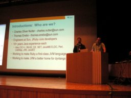

JRuby: Ruby for the Java Platform （Charles Nutter / Thomas Enebo）
- スピーカー
- Charles Nutter / Thomas Enebo - Sun Microsystems, Inc; JRuby: http://www.jruby.org/
- プロフィール
- Charles Nutter has been a Java developer since 1996, architecting applications and leading development teams, and now works full-time on JRuby and dynamic language support for the Java platform at Sun Microsystems. He led the open-source LiteStep project in the late 90s and came to Ruby in the fall of 2004. Since then he has been a member of the JRuby team, helping to make it a true alternative Ruby platform. Charles hopes to continue improving Ruby support on the Java platform and Ruby adoption worldwide over the coming years, as well as expanding support for other dynamic languages on the Java platform. He also hopes to help the core Ruby development team with ongoing research and development of the C implementations of Ruby.
Thomas Enebo is a core developer of the JRuby project and he is also an employee of Sun Microsystems. Tom has been using Java for over a decade and Ruby over half a decade. At Sun, he is working to make JRuby a piece of software that will capture the hearts and minds of Ruby and Java developers everywhere. Tom is also working to make JRuby a first-class citizen on the JVM. Tom along with Charles Nutter will be writing a book on JRuby this year. - 講演時間
- 11：25〜11：55
- 講演者による資料
- JRuby_RubyKaigi-2007_j.pdf （和訳付き, 284 KB）
皆さんの講演時間が短かくて、11:15からの講演になりました。
自己紹介
お二人はJavaが作られてからずっと使っているとのこと。
JRubyとは
- Ruby for Java platform
- Open source
- 2002
- 1.8.5 compatible
- Ruby can call Java, Java can call Ruby
周辺プロジェクトとして、ActiveRecord-JDBCとか GoldSpike (Railsプラグイン) などもある。
JRuby 1.0がリリースされました！(大きな拍手) プロダクションに耐えるので、 ThoughtWorksがサポートもしています。
RubyユーザーはなぜJRubyを使うべきか
- スケーラビリティ
- native threading
- Java bytecodeへのコンパイル
- Javaライブラリを使える
- Javaの資産が活用できる
- などなど
ベンチマーク
フィボナッチ数列の計算では、 JRubyは起動に少し時間がかかるが、起動後はruby-1.8.5より少し速い。
デモ
JRuby IRBから。補完もできます。
include Java import javax.swing.JFrame
するとRubyのように見えるJavaコードからウインドウの生成などもできます。
button = javax.swing … frame.add button frame.show
おぉ〜。
リスナのクラスを定義して、ボタンに足して、ボタンを押すと 「Press me！」ボタンが「Don't press me again!」に変化しました。
おぉ〜。
JRuby for Rails Developers
- デプロイが簡単
- Web ARchive files
- GlassFish
- Broadeer, scalabel database surpport
- たくさんのデータベースのリストが！
- 講演者もあまり知らないとのことです
- Integration with Java libs, legacy serviecs
- Java EEはでかい牛のようなもので良い肉はたくさんあるよ
- Easier to switch frameworks
JRuby on Railsのデモ
jdbcにつながるbuggyというアプリケーション。
jruby buggy/server
次はこれをデプロイします
rake war:standalone:create
warファイルはzipファイルのようなもので、 ライブラリやgemや必要なものをまとめてくれます。
これをGlassfishで展開。
将来
- JRuby on Railsをfirst class webframeworkに
- Import Java EE support
- Database connection pooling
- Better WARfile deployment
- Rails "magic" for EJB, JMS, JTA, JMX
- Imporve support for Rubyists
- Port more Ruby Native (C-) Libraries
- Continue to make performance better
URL
- JRuby; http://www.jruby.org
- RubySpec: http://www.headius.com/rubyspec - English wiki
- Charlesのblog: http://headius.blogspot.com
- Thomasのblog: bloglines.com/blog/ThomasEEnebo
Q&A
- Q
- Javaメソッドの見た目の違いは？
- A
- CamelCaseだけじゃなくてアンダースコア版も用意している
- Q
- Action Listnerはひとつしかメソッドしかなかった。ブロックにしたら？
- A
- ブロックでも可能
- Q
- スケーラビリティは？
- A
- 良いという噂は聞いているが公式な結果はいまのところない
- Q
- 標準的なスケーラビリティテストは？
- A
- Rails用にはいまのところ無い。
- Q
- デモでなぜviを使ってたの？
- A
- これまでRubyを使ってきた人は、JRubyでもviを使えるんだよ！もちろんNetBeansも使える。
- Q
- Javaユーザへの訴求点は？
- A
- やっぱり5分でアプリができるのは驚かれる
- Q
- 沢山のC拡張ライブラリを使っている人へのサポートは？
- A
- Cのライブラリをポートするのは難しいが、それらに対応するJavaのライブラリがあることが多いので、それをJRubyで使えば良い
- Q
- JRubyはオンデマンドインポートをサポートしているか？
- A
- const_missingを使って実装してある。It usually works…でもパフォーマンスが落ちるので推奨しません。
(ロガー:zunda)


Keyword(s):
References:[RubyKaigi2007速報ログ]